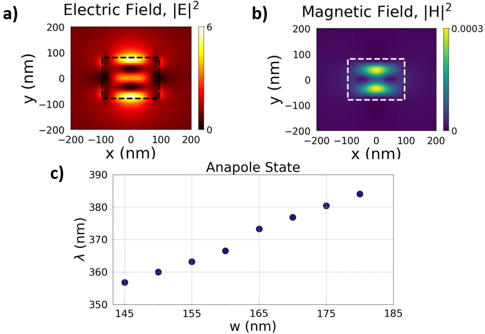
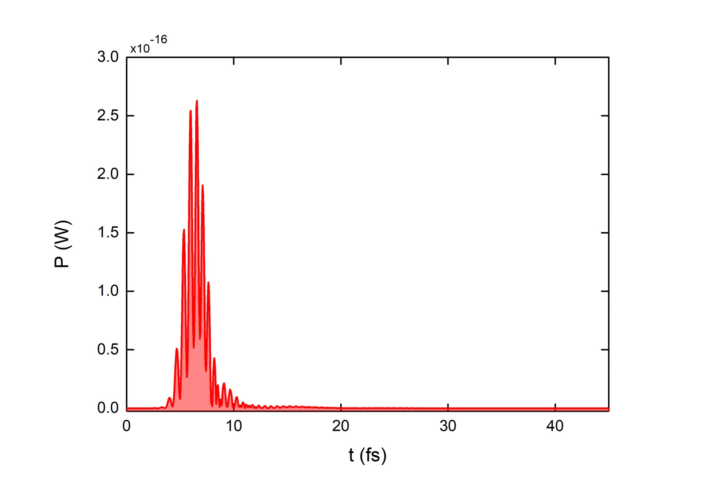
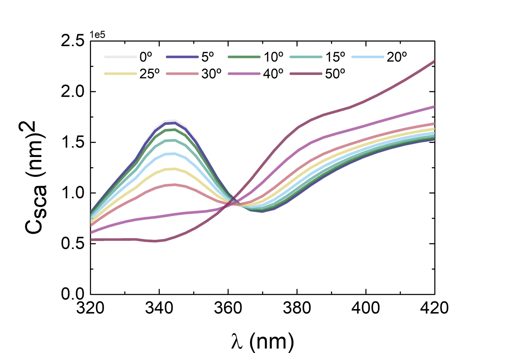
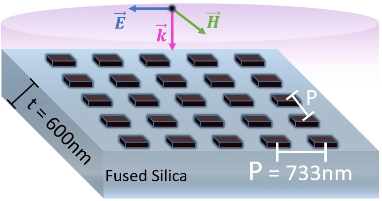
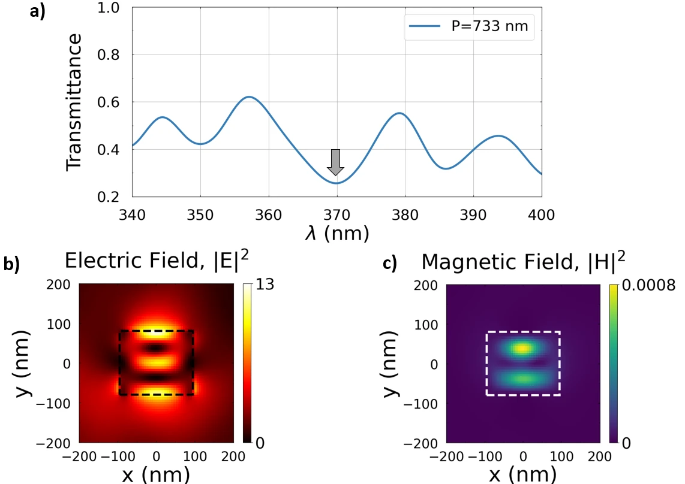
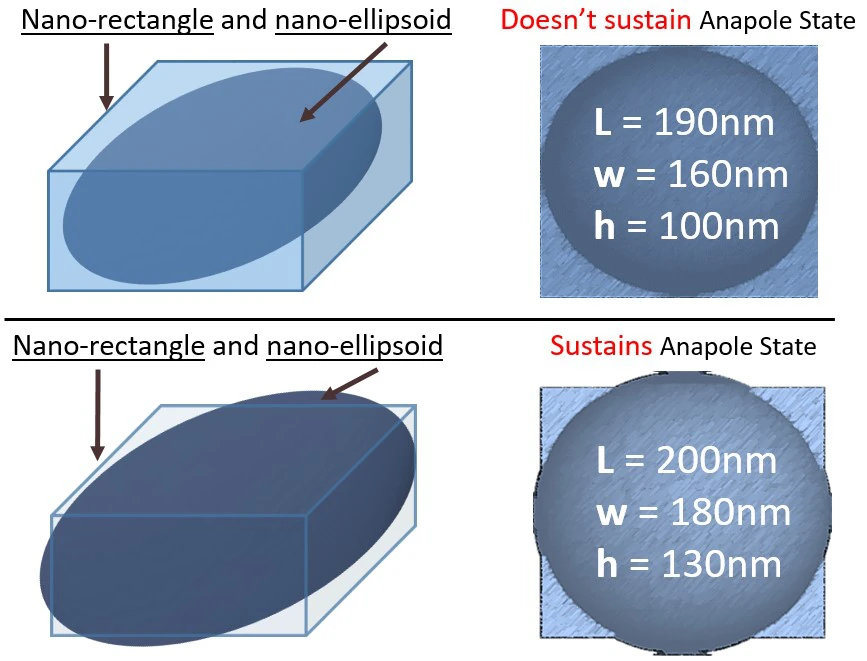

Research · The physics behind Part III
Anapoles: when a particle goes quiet
Shine light on a tiny particle and it glows back in all directions. Under the right conditions it almost stops, while the light inside keeps growing. This page explains why, using simulations of titanium dioxide (TiO₂) nanostructures under ultraviolet light.1,2
1 Light that comes back
When light reaches a particle smaller than its wavelength, the electric field pushes the charges in the material back and forth. Oscillating charges radiate, so the particle sends light out in all directions. This is scattering, and it is how we see most objects.
A material with a high refractive index n and low absorption k, such as silicon in the visible or TiO₂ in the near ultraviolet, holds the light inside the particle for a while. At certain wavelengths the particle resonates, much like a cavity, and the scattering becomes strong.11
2 Splitting the light into simple parts
The currents inside a real particle are complicated. A multipole decomposition writes them as a sum of simple patterns, in the same way a musical note can be split into a fundamental tone and its overtones. Each pattern has its own shape of radiation and its own strength and phase.4,7
3 Two dipoles that cancel
Because the electric dipole p and the toroidal dipole T radiate with the same angular pattern, an observer far away sees only their sum. In the convention of our paper, the total electric dipole is1
D = p + (i k / c) T, with k = 2π/λ₀
where λ₀ is the wavelength in vacuum and c the speed of light. When the two terms are equal in size and opposite in phase, D = 0 even though p and T are both large. Dipole radiation is then suppressed. This is the anapole, from the Greek for “without poles”.5,6 Try it below.
Try it: cancel the dipole
Dipole radiation: of p alone
4 An ultraviolet anapole in TiO₂
Most anapoles had been shown in the infrared and the visible, using silicon or germanium.5,8 Below 400 nm silicon absorbs strongly, so we turned to amorphous TiO₂ grown by atomic layer deposition. Its refractive index is high, about 2.8 at 366 nm, and its absorption is close to zero above about 350 nm.12
We simulated a free-standing TiO₂ nano-rectangle 190 nm long, 160 nm wide and 100 nm high, lit from above with the electric field along its length. Near 366.5 nm the total scattering has a pronounced minimum. The decomposition shows why: the electric and toroidal dipole contributions interfere destructively there, and their phase difference reaches the anapole condition (Figure 3).1

Two checks make this an anapole rather than just any dip in a spectrum. First, the electric field intensity inside the rectangle reaches about six times that of the incoming light, while the magnetic field intensity stays very small (Figure 4a, b). Second, the dip moves smoothly with the width of the rectangle, from about 357 nm at 145 nm width to about 384 nm at 180 nm (Figure 4c). A square cross-section (190 × 190 nm) gave no anapole at all.2

Why it works: the energy stays stored
When the light is first switched on, the particle radiates a burst lasting a few femtoseconds. By about 12 fs the radiated power has fallen almost to zero (Figure 5). During this time, each maximum of the electric field is followed by a maximum of the magnetic field 0.26–0.32 fs later, about a quarter of the 1.22 fs optical period at 366 nm. Electric and magnetic fields a quarter-cycle apart are the signature of stored energy, as in an LC circuit, not of light travelling away.1,2

The anapole also survives imperfect alignment. Tilting the light by up to about 25° leaves the dip in place; beyond that it fades (Figure 6). That matters in a laboratory, where a beam is never perfectly perpendicular.2

5 Why we used MENP
A dip in the scattering spectrum is not proof of an anapole. A Fano resonance, where a narrow mode interferes with a broad background, produces a similar dip.2 To tell them apart you must see which moments are cancelling. That requires the decomposition of Section 2.
The simulation gives the electric field inside the particle. From it, the Multipole Expansion for NanoPhotonics (MENP) package computes the Cartesian multipole moments, including the toroidal dipole, and the share of the scattering carried by each.3 We chose it for three reasons:
- It is open source and published. Anyone can check the method and repeat the calculation.
- It separates the toroidal dipole from the electric dipole. Without that, the cancellation in Figure 3c is invisible.
- It is separate from the field solver. The fields come from a finite-difference time-domain (FDTD) simulation; MENP only analyses them.
Before applying it to TiO₂, Rafael Vilarinho set the package up and together we reproduced results from the MENP authors’ reference papers, to confirm our implementation was correct.2
6 From one particle to a metasurface
One nanoparticle is too small to use on its own in an experiment. A metasurface is a flat array of many identical nanostructures, each smaller than the wavelength, that together shape the amplitude, phase or polarisation of light.10,11 Think of it as a lens or filter thinner than a soap film.
We placed the TiO₂ rectangles on a suspended fused silica membrane 600 nm thick (Figure 7, left). With a spacing of 733 nm the array shows the anapole as a dip in transmission at 370 nm (Figure 7, right). The spacing is not arbitrary: at 733 nm the second diffraction order runs along the surface at λ ≈ P/2 ≈ 370 nm, which helps keep the light confined. Spacings of 500, 600, 700 and 800 nm gave dips with different field patterns, not anapoles. The quality factor of the metasurface anapole is about 34, probably limited by the small remaining absorption of TiO₂ in the ultraviolet.2


7 Design for what can be made
The simulations also tried hexagons, octagons, decagons and ellipsoids. All but the ellipsoid supported the anapole at 190 × 160 × 100 nm. The ellipsoid needed to grow to 200 × 180 × 130 nm (Figure 8).2 On a screen, all of these are equally easy. In a cleanroom they are not.
Electron-beam lithography followed by etching makes flat-topped shapes with nearly vertical walls: rectangles, disks, polygons. Corners round off and sizes drift by a few nanometres. A three-dimensional ellipsoid, curved in height as well, has no such simple route. This is why the metasurface uses rectangles.

Tolerances can be put into numbers. In Figure 4c the anapole moves by about 0.8 nm for every nanometre of width. The metasurface resonance, with a quality factor of 34 at 370 nm, is about 11 nm wide. Use the slider to see how a fabrication error in width compares with that width.
Tolerance check
Resonance can move by
Before choosing a design
- Ask what the process can hold. Minimum feature size, corner rounding, wall angle, thickness control. Your local cleanroom staff know these numbers.
- Look for a fabricated precedent. If nobody has made a similar structure in that material, budget months for process development, not weeks.
- Simulate the sensitivity, not just the ideal. Vary each dimension by the process tolerance and see whether the effect survives.
- Prefer the simplest shape that works. A rectangle that can be made beats an ellipsoid that cannot, however beautiful the ellipsoid’s spectrum.
- Match the design to the project. In an experimental thesis with a fixed end date, a feasible design is the result. In a theoretical study, an ambitious geometry can be the point, as long as its limits are stated.
In this PhD the metasurface was designed and analysed by simulation; its fabrication is left for future work.2
8 Where anapoles can be used
Because an anapole concentrates light inside the material, it strengthens effects that grow faster than the light intensity. The clearest example is third-harmonic generation, where three photons combine into one with three times the energy. Germanium nanodisks excited at the anapole gave a strong increase in third-harmonic light,8 and a TiO₂ metasurface has generated vacuum-ultraviolet light this way.9
That is the link to the rest of this research: tunable vacuum-ultraviolet light can ionise specific gas molecules, the basis of a selective air-quality sensor. A compact anapole metasurface is one possible route to such a source.2
A note on the name: the anapole moment was first proposed by Yakov Zel’dovich in 1957, in the study of parity violation in nuclear physics. The optical version in dielectric nanoparticles was demonstrated in 2015.5,6
References
- D. Poeta, R. Vilarinho, M. López-García and P. A. A. De Beule, “Optical anapoles excited by UV-A illumination,” Optics Letters 49, 7198–7201 (2024). doi:10.1364/OL.536925. Supplement: doi:10.6084/m9.figshare.27648525.v5 (CC BY 4.0).
- D. Poeta, Tunable VUV photoionization and slow-light enhanced third-harmonic generation in TiO₂ for selective VOC sensing, PhD thesis, Bielefeld University (2026), Sections 2.8 and Chapter 7.
- T. Hinamoto and M. Fujii, “MENP: an open-source MATLAB implementation of multipole expansion for nanophotonics,” OSA Continuum 4, 1640 (2021). doi:10.1364/OSAC.425189
- R. Alaee et al., “An electromagnetic multipole expansion beyond the long-wavelength approximation,” Optics Communications 407, 17–21 (2018). doi:10.1016/j.optcom.2017.08.064
- A. E. Miroshnichenko et al., “Nonradiating anapole modes in dielectric nanoparticles,” Nature Communications 6, 8069 (2015). doi:10.1038/ncomms9069
- V. Savinov et al., “Optical anapoles,” Communications Physics 2, 69 (2019). doi:10.1038/s42005-019-0167-z
- N. Papasimakis et al., “Electromagnetic toroidal excitations in matter and free space,” Nature Materials 15, 263–271 (2016). doi:10.1038/nmat4563
- G. Grinblat et al., “Enhanced third harmonic generation in single germanium nanodisks excited at the anapole mode,” Nano Letters 16, 4635–4640 (2016). doi:10.1021/acs.nanolett.6b01958
- M. Semmlinger et al., “Generating third harmonic vacuum ultraviolet light with a TiO₂ metasurface,” Nano Letters 19, 8972–8978 (2019). doi:10.1021/acs.nanolett.9b03961
- N. Yu and F. Capasso, “Flat optics with designer metasurfaces,” Nature Materials 13, 139–150 (2014). doi:10.1038/nmat3839
- A. I. Kuznetsov et al., “Optically resonant dielectric nanostructures,” Science 354, aag2472 (2016). doi:10.1126/science.aag2472
- J. Jolivet et al., “Structural, optical, and electrical properties of TiO₂ thin films deposited by ALD: impact of the substrate, the deposited thickness and the deposition temperature,” Applied Surface Science 608, 155214 (2023). doi:10.1016/j.apsusc.2022.155214
Figures 3–8 are reproduced from the PhD thesis (Ref. 2). The results they show were published in Ref. 1, which is open access under the Optica Open Access Publishing Agreement; the power trace of Figure 5 is also in its supplement under CC BY 4.0. Figures 1 and 2 and both interactives were drawn for this page.